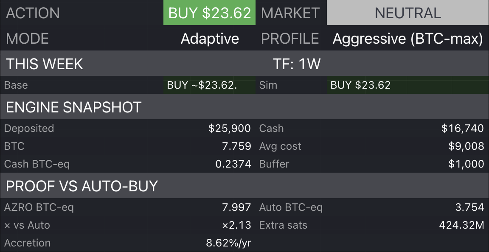

Output
Clear next step
BUY / HOLD / TRIM resolved without chart clutter.
BTC allocation operating system
A cycle-aware Bitcoin allocation framework engineered to turn volatility into a repeatable operating process.

Adaptive mode • aggressive BTC-max profile • weekly dashboard snapshot
Output
BUY / HOLD / TRIM resolved without chart clutter.
Sizing
Each action includes a suggested amount sized to your plan.
Accountability
Audit BTC-equivalent progress and extra sats versus a simple baseline.